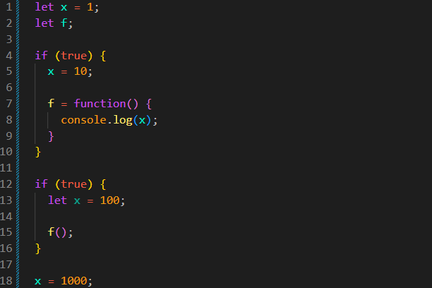

Closure
Intro
Iremos considerar o uso de uma variável dentro de uma função e como essa função consegue acessar variáveis do escopo onde foi criada.
Iremos considerar o uso de uma variável dentro de uma função e como essa função consegue acessar variáveis do escopo onde foi criada.
JS:

let x = 1;
let f;
if (true) {
x = 10;
f = function() {
console.log(x);
}
}
if (true) {
let x = 100;
// f();
}
No momento temos uma variável x = 1 e uma variável f sem nenhum valor atribuído.
Em seguida, temos dois blocos com if (true).
No primeiro bloco, alteramos o valor da variável x para 10 e atribuímos uma função à variável f.
A função criada dentro de f utiliza a variável x.
No segundo bloco, criamos outra variável chamada x com o valor 100.
Ainda no segundo bloco, podemos chamar a função f();. No momento ela não foi chamada porque a deixamos como comentário.
A questão é: qual valor irá aparecer quando chamarmos a função?
Teremos como resultado x = 10.
Isso acontece porque a função utiliza o escopo léxico. Ou seja, quando precisamos encontrar uma variável, o JavaScript procura primeiro no local onde a função foi criada e depois sobe pelos escopos externos.
Nesse caso, não existe uma variável x criada dentro da função. Então o JavaScript procura no escopo externo e encontra a variável global x, que possui o valor 10.
A variável x = 100 do segundo bloco não é utilizada porque ela pertence a outro escopo e apenas possui o mesmo nome da variável externa.
Esse comportamento está relacionado ao conceito de Closure.
Closure acontece quando uma função consegue acessar e manter uma referência às variáveis do escopo onde foi criada, mesmo quando a função é executada em outro local.
Por que closures são tão importantes?
Closures são importantes porque permitem que uma função tenha acesso a informações de um escopo externo. Isso também pode ser usado para criar dados que não podem ser acessados diretamente de fora.
Porém, no exemplo anterior, a variável x não é privada da função. Ela é uma variável global.
Por isso, se alterarmos seu valor:
let x = 1;
let f;
if (true) {
x = 10;
f = function() {
console.log(x);
}
}
if (true) {
let x = 100;
f();
}
x = 1000;
f();
A primeira chamada de f() exibirá 10.
Depois de executarmos x = 1000, a variável global foi alterada. Portanto, a segunda chamada de f() exibirá 1000.
Isso mostra que closure não significa que a variável fica congelada. A função mantém acesso à variável externa e, se essa variável puder ser alterada, a função verá seu novo valor.
Um exemplo mais comum de closure acontece quando uma função interna consegue acessar uma variável criada dentro de outra função.
function contador() {
let numero = 0;
return function() {
numero++;
return numero;
}
}
const contar = contador();
console.log(contar()); // 1
console.log(contar()); // 2
console.log(contar()); // 3
A variável numero foi criada dentro de contador().
A função interna consegue acessar numero porque foi criada dentro desse escopo.
Mesmo depois que contador() termina sua execução, a função retornada continua tendo acesso à variável numero.
Cada vez que chamamos contar(), o valor de numero é mantido e incrementado.
O código externo não consegue acessar numero diretamente:
console.log(numero); // erro
Esse é um dos principais usos de closure: manter dados acessíveis para uma função, mas protegidos do acesso direto pelo código externo.
Uma forma simples de lembrar é:
Resumo: closure é como se a função carregasse consigo o acesso ao ambiente onde foi criada.